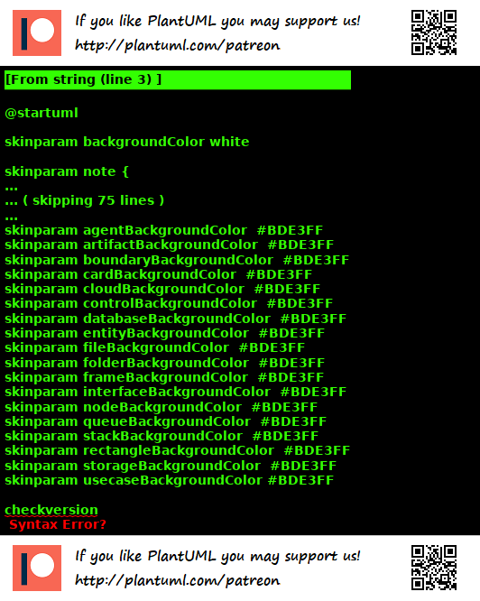

2. About this Guide¶

Where system diagrams meet system reality¶
2.1. Goals¶
Create a user-focused guide for PlantUML that enables you, the user, to deliver maximum value with PlantUML.
Create a guide that was better than anything that existed and that I, @crashedmind, would be happy with.
Grow PlantUML; this guide and other information, the tool, and the community.
2.2. Principles¶
The Principles on which this guide are based:
Deliver Value to the user
Learn by Playing: All examples include a link to allow you to edit and play with them easily - no setup required.
To teach is to learn twice.
Open Source - The Network Effect - anyone can and should contribute to this guide.
It must be fun to write it - and to read it.
Documentation-Of-Code Documentation-As-Code: documentation of the examples, and the example source live together in the same directory in Git.
2.2.1. Deliver Value To The User¶
This guide is focused on enabling you to do what you need to do - empowered by PlantUML. So it is outcome focused.
In my professional role building products in the software industry, I tell my team members:
The customer cares about what they are trying to do - not your product.
I came across this tweet that illustrates this graphically:
https://twitter.com/UserOnboard/status/408372844876165120
So the examples focus on what we’re trying to do - and explain only the parts of PlantUML that are necessary to do it.
2.2.2. Learn by Playing¶
Each chapter has an outcome.
Each step in each chapter has
An outcome - the step heading
Source code - for the diagram
Play - where you can test the diagram and play with it.
Explore - where you can confirm your understanding by trying things as you play.
2.2.3. To Teach Is To Learn Twice¶
If I knew all this info already, I would have no interest in writing this guide.
It was the quest for knowledge that drove it, and the quest for a solution to a problem that consumed my thoughts (making PlantUML StdLib simpler, standard, and more friendly and powerful to the user ).
There’s no better way to learn than by writing a guide for others - and having the master on hand to provide insights as you go - and the community to share their knowledge.
I expect to learn from feedback on this guide.
2.2.4. Open Source - The Network Effect¶
PlantUML, and all the Tools Used required to write this guide are Open Source.
Moreover, the first release is intended as a seed to be grown by the PlantUML community.
2.2.5. It Must Be Fun To Write It - And To Read It¶
Happy People are Productive People are Happy People!
2.2.6. Documentation-Of-Code Documentation-As-Code¶
As part of the Agile, and Continuous Delivery, movements, software, and the models that describe software, are necessarily coming closer together. PlantUML is one way to enable this.
See Journey to Documentation as Code for more details.
2.3. This Guide¶
I, @crashedmind, wrote this guide as part of my own “Journey to Documentation as Code” where I landed on PlantUML and Sphinx as the main tools for proposing, analysing, documenting, maintaining software systems based on working with thousands of engineers across the globe.
I am a regular user of PlantUML and I believe in it.
I had initially contributed the OSA icon set to PlantUML Stdlib. Specifically I generated the icon set and published it in my github. I was pleasantly surprised that it was picked up and included in the PlantUML Stdlib.
Some time later I was working on a project that used an Elastic stack, and I needed the Elastic icon set for PlantUML. So I created that - and submitted via an email and PR.
I was thinking about adding more icon sets I needed, and trying to better understand the macros people had defined as part of their stdlib icon sets. That’s descibed in the chapter todo
So, I contacted Arnaud to see if anything like this was on the roadmap.
In the subsequent 3 weeks, the idea to standardize the Stdlib was discussed, and this guide went from zero to first release.
To enable the StdLib standardisation, I suggested the keyword arguments and Arnaud produced a release to play with next day - and this became part of an official release:
https://plantuml.com/news 17 May, 2020: Use keyword arguments with the preprocessor (V1.2020.10). (Thanks to Crashedmind for the suggestion !)
See PlantUML Stdlib Under The Hood for more info.
This 3 weeks for me was an opportunity in my career to give something back.
2.3.1. Tools Used¶
Sphinx and PlantUML (running in Docker), and GitHub, are the primary tools used for this guide.
The document (as HTML and images, generated by Sphinx and PlantUML respectively) and the document source (as ReStructuredText, Plantuml source files) are hosted in Github.
GitHub actions and workflow are used e.g. when output html is committed, it triggers a link checker than auto-creates an Github issue for the project if a URL link is broken.

1 2 3 4 5 | @startuml
checkversion
@enduml
|
2.4. Credits¶
Arnaud for giving us PlantUML. And for being receptive and responsive; from my initial contact asking questions, to subsequent interactions providing suggestions.